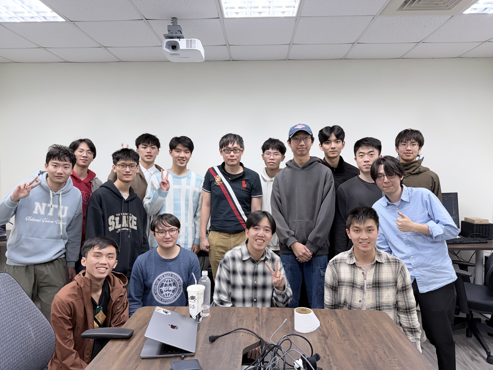

Welcome! The Embodied AI lab are dedicated to developing autonomous, real-world robotic systems. We approach this challenge from three perspectives. The first is Action Control. We train robot policies that allow robots to perform mobile manipulation tasks with high efficiency, effectiveness, and robustness. The second is Learning and Exploration. We develop algorithms that enable physical agents to explore their environments and continually acquire new skills with minimal human intervention. The third is Dynamic Modeling. We build dynamic systems that enhance environmental understanding by simulating the outcomes of physical interactions. Together, these three research topics aim to create robots that function as intelligently as animal beings.
Code for our projects is available at https://github.com/EmbodiedAI-NTU.
We are looking for Ph.D/Master/undergraduate students interested in robot learning, computer vision, and machine learning. If you are an undergraduate at NTU interested in research positions, please fill out this form. If you are interested in Master/Doctoral positions, please fill out this form.